- In all the examples discussed, we dealt with data as input for machine learning algorithms: numbers, images, ...
- Many of the pitfalls in using AI have to do with the data. "Garbage in, garbage out".
In the following, we will focus intensively on data. What kind of data is there? How can we describe it? And how do we need to handle it to avoid errors?
- Numbers come in two types:
- Discrete: Integers. Examples: number of people in a room, days until Christmas, calls to the phone hotline.
- Continuous: Decimal numbers (floats). Examples: weight of a person, distance to Paris, percentage of women in a lecture, temperature.
Example:
Information about different wines.
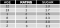
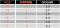
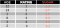
Often also called "data frame", "data table", or "matrix".
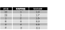
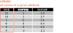
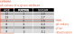
- Missing values can be blanks in the data, but also marked with placeholders like "-1" or "NA".
- Outliers: values that are far outside the expected range.
- Forbidden values: values that are outside the allowed range.
Example:
Information about different wines.
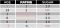
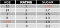
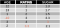
- Check assumptions about numbers
- Which values are allowed?
- Which value ranges are expected?
- How are missing values encoded?
- Descriptive Statistics
- Minimum: the smallest number
- Maximum: the largest number
- Median: which number is exactly in the middle if we order all values from smallest to largest? Example: [1, 1, 3, 5, 6, 6, 13]
- Mean: sum all values and divide them by the count of values
- Mode: the most frequent number
- Missing Values
- Remove columns or rows with missing values.
- Imputation: replace missing values with mean, median, or mode.
- Outliers
- Find out where the values come from.
- Replace with minimum / maximum or missing value.
- Forbidden Values
- Find out where the values come from.
- Replace with missing values or impute.
- Category: Can have more than two values. Examples: color, gender, place of residence, ethnicity, quality.
- Boolean: "yes" or "no", often "1" or "0".
Example:
Information about different wines.
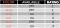
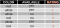
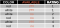
- Boolean values (binary attributes): translate into "0" and "1".
- Categories with two possible values: translate into boolean values.
- Categories with more than two possible values: split into multiple columns ("one-hot encoding").
Example:
Information about different wines.
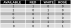
Pixels (picture elements) already contain numbers – the color values of the pixel. Images already have rows and columns. Actually, images are already tables.
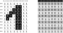
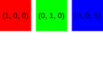
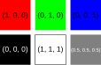
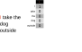
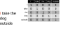
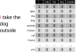
- There are around 600,000 words in the Oxford English Dictionary.
- This idea quickly leads to huge tables.
- More on this in Lecture 4!
Individual numbers recorded at regular time intervals.
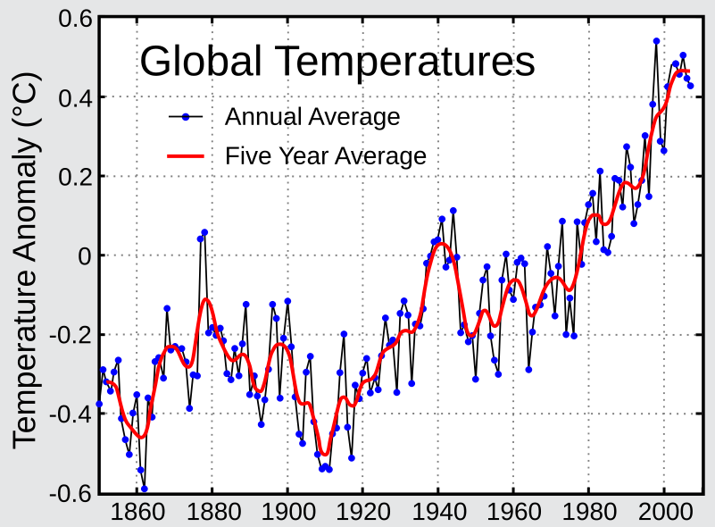
{kind=link}
Many numbers (frequencies) recorded at regular time intervals.
{kind=link}
- To make data usable for machine learning, we need to convert it into numbers in tables.
- There are different data types, all of which can be represented in tabular form in one way or another.
- Numbers: discrete and continuous
- Classes: boolean (binary attributes) and categories
- Images: black and white, and color
- Text
- Time series
- To discover and fix data problems, it's helpful to look at descriptive statistics (minimum, maximum, mode, median, mean).
Think back to the supervised learning application from your daily life that you considered in the last lecture.
- What data could you collect to train your algorithm?
- What problems could arise with this data?
- How could you fix these problems?